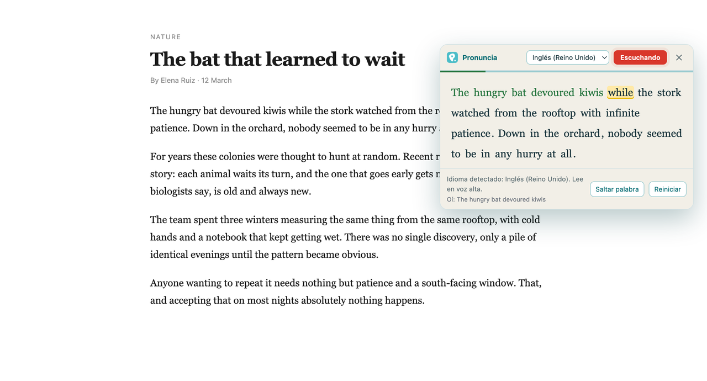
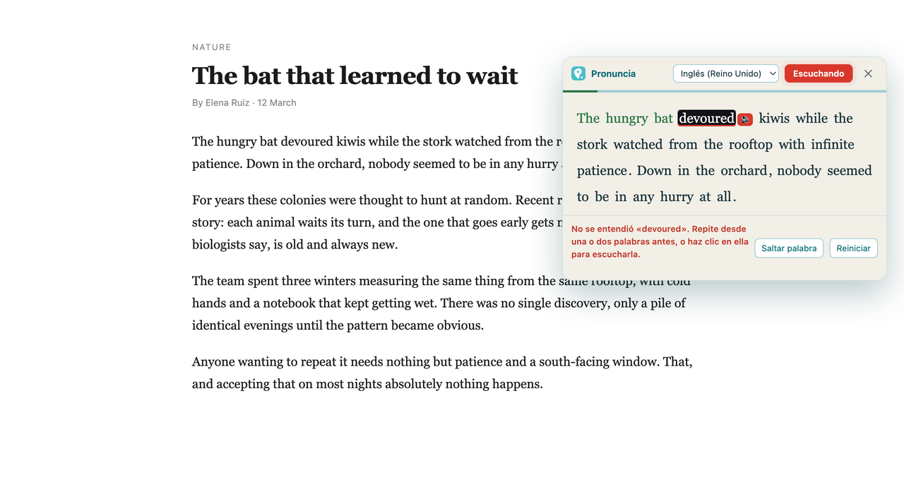

Lee en voz alta. No avanzas hasta pronunciarlo bien.
Pronuncia es una extensión de Chrome para practicar lectura en voz alta con cualquier texto de la web. Seleccionas un párrafo, lo lees, y el texto solo avanza cuando el reconocedor entiende la palabra que tocaba.
Añadir a Chrome Gratis 21 días, sin tarjeta.
Cómo funciona
- Selecciona cualquier texto de una página web.
- Ábrelo con el menú contextual o con Ctrl+Shift+L (⌘+Shift+L en Mac).
- Lee en voz alta. La palabra actual se resalta y no pasa a la siguiente hasta que la digas bien.
- Si te atascas, pulsa la palabra y la oirás pronunciada.


Qué incluye
- Seis idiomas: español, inglés, portugués, francés, italiano y alemán, con sus variantes regionales.
- Detección automática del idioma del texto seleccionado.
- Megáfono de referencia: pulsa cualquier palabra para escuchar cómo se pronuncia.
- Exigencia ajustable, para dar más o menos margen según tu nivel.
- Velocidad de lectura configurable en el megáfono.
- Funciona en cualquier página web, sin copiar y pegar en ningún sitio.
Precios
21 días de prueba gratis, sin tarjeta. Después, elige plan:
Los precios están en dólares estadounidenses. Los impuestos aplicables según tu país se calculan y se muestran en el momento del pago. Puedes cancelar cuando quieras y seguirás teniendo acceso hasta el final del periodo que ya pagaste.
La suscripción se contrata desde la propia extensión, que es la que sabe a qué cuenta hay que activarla. Consulta también los términos, la política de reembolsos y la política de privacidad.
Antes de suscribirte, conviene que sepas
Pronuncia usa el reconocimiento de voz de Chrome, que indica qué palabras entendió, no una nota de pronunciación por fonema. Es indulgente con acentos marcados y falla con nombres propios y tecnicismos. Sirve para practicar fluidez y soltura leyendo; no sustituye a una evaluación fonética.
Ese reconocimiento envía el audio a los servidores de Google, igual que en cualquier web que use el dictado de Chrome. Lo explicamos en detalle en la política de privacidad.
Necesitas Google Chrome, micrófono y conexión a internet. Los 21 días de prueba están para comprobar si te sirve antes de pagar nada.